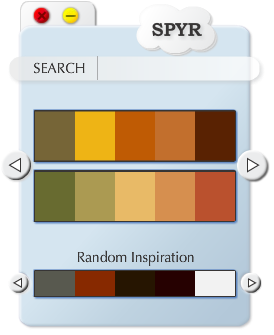

MEET SPYR
SPYR (as in inspire) is a free Adobe Air application for artists, designers, and developers used to inspire creativity. SPYR provides users with access to color palettes to help get their creative juices flowing. Users will be able to search for color palettes based on their moods, the colors they want to utilize in their projects, or other terms that they want to describe visually.
Enough chatter about what we think of SPYR. Try SPYR for yourself. You will not be disappointed.

FUTURE OF SPYR
SPYR will continue to evolve with the Adobe Kuler API. In the future, we hope to incorporate other types of services to make SPYR the total package of inspiration for creative people. In addition to color themes, users can look forward to images, music, and video inspiration that match the tone of their search criteria.